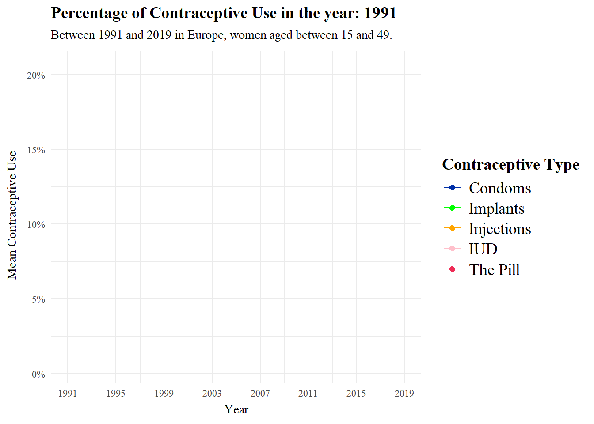
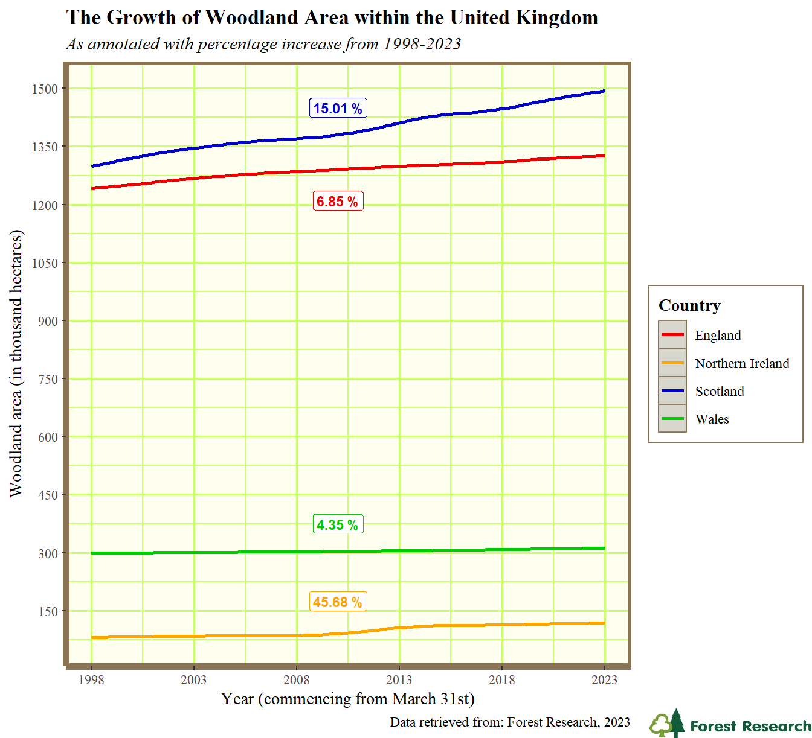

H Class of 2024
A showcase of some projects from the class of 2023-24.
There were too many students on the module this year to show all projects, so here are a few highlights. Many creative, fun, interesting, challenging visualisation projects were produced but aren’t shown here, but these few give a flavour of what student’s got up to:
Rachel (looked at Contraception use since the 90s](https://rgatley.github.io/Contraception/). (Repo):

More trees! The Growth of Woodland Area within the United Kingdom (1998-2023) (Repo)

Tom looked at the Relationship Between Major Airport Locations and UFO Sightings in Mainland USA (Repo))

Max asked Can national football results really have an impact on UK stock market values?. tl;dr - if they do, it isn’t a large effect (which is why attending to the y-axis range is important in interpreting visualisations) (Repo):
One of the more sophisticated projects we’ve ever seen, which really showcases what is possible with when advanced data scraping, managemetn and visualisation are combined in a dashboard. Justin’s project How do the perspectives of UK university students, as expressed on Reddit, evolve over time? is beyond what we teach on this course, but we’re happy we can support students to do more advanced work as part of the module. (Repo)
Carlos showed off R’s capacity for scientific data visualisation, re-visualising his undergraduate project data on The effects of calcium modulators on TDP-43 function and development of a new co-localization protocol in ALS cellular models (Repo)

H.1 Reflection
This year we welcomed Hazel Gordon as GTA on the course.The comments from those taking the course make clear how much of a contribution she made - thank you Hazel!
H.1.1 Tom’s reflection
Feedback was mostly positive, and - as always - we continue to work on the course to improve it based on how it is experienced by each year of students.
This year we had a number of comments on what else could be included in the course: SQL, more on interactive and animated plots, and python. We’ll keep these in mind for future iterations of the course. As in previous years, the part which students found hardest was github. As in previous years, I’m going to keep teaching it because it is still vital infrastructure for data science.
H.1.2 Student feedback
Below, a (very biased) selection of student feedback
“I believe that the hands-on, project-based approach, emphasis on reproducibility and open- source tools, and inclusion of advanced topics in this course all make for a really rich and engaging learning experience for students. I truly believe that these elements can be served as a model for other courses, helping to enhance student engagement and skill development in the field of data science and research methods.”
I’ve always really loved the problem solving element of coding and the way that this course is set up you really get a chance to explore that side of things playing around with each new technique in the class environment with help at hand. The live coding was really useful and having the course materials all available on GitHub was super useful when building the project.
I enjoyed the classes, I thought that they were really well taught and Tom was very helpful and enthusiastic about the topic which definitely helped build my confidence when doing something completely new to me. I found the workshop style of the classes the most useful, this could definitely be applied to other courses as it’s much better to do active/hands-on learning than passive listening.
I really enjoyed the freedom of being able to choose a project that interested me. It really motivated me to stick to it when i was struggling with things.
something about the course that really helped my understanding was having set exercices to go through during the class, as well as the opportunity to ask the course leaders about anything we’re unsure on.
I really enjoyed how hands-on and practical the course was. By learning both the principles and techniques involved in coding, I understood how important it was to consider the intent of your message and how it influenced design choices, statistical tools and output formation in my projects. I especially enjoyed the class where students submitted interesting visualizations and we discussed its merits and demerits, giving me the confidence to share my opinions while listening and learning from my peers.
I found that the live coding was helpful especially the session where Tom created a project from scratch from downloading the data to uploading it on Github.
I liked the encouragement to use chat GPT, this is a skill I will use alot in the future, I think this could be shown more in class, specifically how to ask chat GPT the right questions and when to use other online resources.
The most important factor that helped my learning was the lecturer’s enthusiastic approach to coding. As a computer science undergraduate who despised coding, I surprisingly really enjoyed coding this assignment, due to the simplified, clear lecture material and the encouragement to keep trying to find solutions from the teaching staff. Other courses should utilise this approach to ensure students remain engaged and confident in their work.
H.1.3 Useful links
I asked students what resources they found useful. Here’s a partial list:
H.1.3.1 Videos
dataslice YouTube tutorials youtube.com/(dataslice?)
R Programming 101 - YouTube. (n.d.). Www.youtube.com. https://www.youtube.com/ (RProgramming101?)
Youtube Playlist: “Where are your eyes drawn? Makeover series” Where are your eyes drawn? makeover series - YouTube https://www.youtube.com/playlist?list=PLwEff2aXpeWsdvonP3voif0acubN3XKmA
H.1.3.2 Pages
The Anatomy of a Shiny Application https://www.r-bloggers.com/2021/04/the-anatomy-of-a-shiny-application/
Luna, J.C. (2023). 11 Data Visualization Techniques for Every Use-Case with Examples. Data Visualization. https://www.datacamp.com/blog/data-visualization-techniques
Dwi Cahyaningtyas, R. (2023, May 28). RPubs - R Markdown Themes Guide: Unleash Your Creativity with Captivating Document Styles. Rpubs.com. https://rpubs.com/ranydc/rmarkdown_themes
Holtz, Y. (2018). The R Graph Gallery – Help and inspiration for R charts. The R Graph Gallery. https: //r-graph-gallery.com/
H.1.3.3 Books & articles
Healy, K. (2018). Data Visualization: A Practical Introduction. Princeton University Press.
Wickham, H., & Grolemund, G. (2017). R for data science [electronic resource]: import, tidy, trans- form, visualize, and model data. O’Reilly. Retrieved from https:// r4ds.hadley.nz/
Wickham, H. (2014). Tidy data. Journal of Statistical Software, 59(10), 1-23. DOI: 10.18637/jss.v059.i10
Li Q. (2020). Overview of Data Visualization. Embodying Data: Chinese Aesthetics, Interactive Visualiza- tion and Gaming Technologies, 17-47. https://doi.org/10.1007/978-981-15-5069-0_:
Midway, S. R. (2020). Principles of effective data visualization. Patterns, 1 (9). https://doi.org/10.1016/j.patter.2020.100141
McCosker, A., & Wilken, R. (2014). Rethinking ‘big data’ as visual knowledge: The sublime and the diagrammatic in data visualisation. Visual Studies, 29(2), 155–164. https://doi.org/10.1080/1472586X. 2014.887268